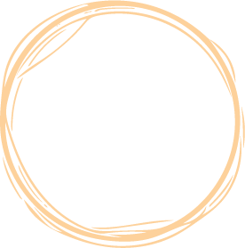

Kulturnest
Unsere Kulturplattform, gestaltet von einem dynamischen jungen Team, ist der zentrale Anlaufpunkt für Kulturinteressierte.
Unser Ziel ist es, Kulturangebote leicht zugänglich zu machen und gleichzeitig Raum für echte Begegnungen und vernetzte Gemeinschaft zu schaffen.
Tauchen Sie ein in die Welt der Kreativität und des kulturellen Austauschs, knüpfen Sie neue Kontakte und entdecken Sie gemeinsam mit Gleichgesinnten
die Faszination der Kultur in all ihren Facetten. Werden Sie Teil unserer pulsierenden Community und erleben Sie Kultur, wie Sie sie noch nie zuvor erlebt haben.
Gegründet im Jahr 2023, steht kulturnest für die spielerische Vernetzung von Kulturbegeisterten in der Region Chur. Mit dem Ziel,
sowohl bekannte als auch unbekannte Künstler:innen und Vereine zu fördern, bietet die Plattform eine zentrale Anlaufstelle für Informationen
und Veranstaltungen. Durch die Kombination von Technologie und Leidenschaft für Kultur trägt kulturnest zur Stärkung der lokalen Kulturszene
bei und fördert den Austausch und die Vielfalt innerhalb der Gemeinschaft. “Will‘s verbindet” ist nicht nur unser Claim,
sondern auch unser Ziel eine Verbundenheit in der Churer Kulturszene zu schaffen.
Vision und Werte
Unsere Vision und die Werte stehen bei unserem Start-up ganz klar im Fokus.
Wir wollen Brücken bauen, zwischen den Generationen durch einen spielerischen Austausch, einheitliche Informationen und einem ansprechenden Design.
Team
Wir sind ein junges, dynamisches Team, welchem die lokale Kultur sehr am Herzen liegt. Wir wünschen uns, dass möglichst viele verschiedene Menschen auf ein organisiertes Kulturangebot zurückgreifen können und somit eine gute Zeit erleben dürfen..
Wir vier Studierende waren am Anfang unseres Studiums auf der Suche nach dem Kulturgeschehen in Chur.
Wir alle engagieren uns besonders für Events und Veranstaltungen, die zum Austausch zwischen Generationen führen und
junge Erwachsene zur Teilnahme an Kulturveranstaltungen animieren. Zusammen sind wir auf die Idee gekommen, kulturnest
zu gründen.
Lerne uns hier besser kennen.